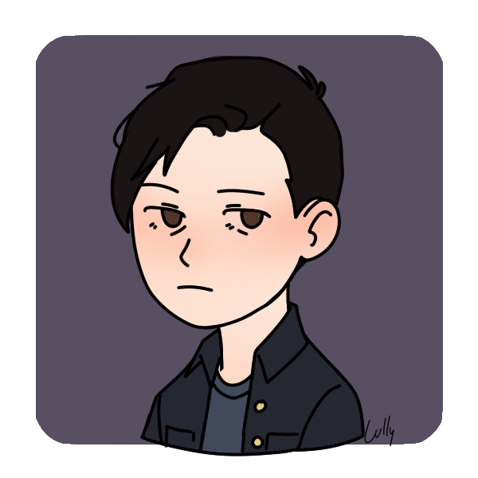
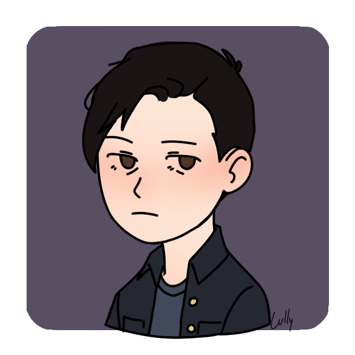

Seja Bem Vindo! Este é meu Portifólio
Saudações! Me chamo Antônio Alan, mas pode me chamar só de Alan, tenho 22 anos e sou estudante na Universidade de Fortaleza do curos de Análise e Desenvolvimento de Sistemas(ADS), aqui neste portifólio, apresento algumas das minha capacitações profissionais que adquiri ao longo de minhas experiências academicas e de vida.
 

Experiências Profissionais
Atualmente não obtive nenhuma experiência real de trabalho ou estágio, mas estou a procura de vivencia-lá o quanto antes, pois sempre estou em busca e aberto a experiências e novos aprendizado, se possível pesso uma oportunidade de demostra minhas competencias em ação.
Progresso Academico
| Semestre | Diciplina | Status |
|---|---|---|
| 1 | Dasafios do ciberespaço | Concluído |
| 1 | Experimentação orentada | Concluído |
| 1 | Fundamentos sistemas computacionais | Concluído |
| 1 | Matemática para computação | Concluído |
| 1 | Postura proficional com interpessoal | Concluído |
| 1 | Raciocínio lógico algoritmico | Concluído |
| 2 | Ambientes desenvolvimento de software | Concluído |
| 2 | Desenvolvimento de sofware em nuvem | Concluído |
| 2 | Experiência empreendedora | Concluído |
| 2 | Programação orientada a objetos | Concluído |
| 2 | Requisitos e modelagem de sistemas | Concluído |
| 2 | Interação humano-computador | Concluído |
| 3 | Ambiente de dados | Em progresso... |
| 3 | Desenvolvimento de plataformas web | Em progresso... |
| 3 | Estrutura de dados | Em progresso... |
| 3 | Projeto arquitetura de sistemas | Em progresso... |
| 3 | Projeto aplicado a desenvolvimento de software | Em progresso... |
| 3 | Ética em computação | Em progresso... |
Cursos
| Curso | Plataforma/Instituição | Status |
|---|---|---|
| JavaScript do básico ao avançado(c/Node.js e projetos) | Udemy | Em progresso... |
| JavaScript do básico ao avançado(c/Node.js e projetos) | Udemy | Em progresso... |
| Microsoft Excel 2016- Nível Básico | Udemy | Concluído |
| Programação em Python do básico ao avançado | Udemy | Em progresso... |
| Curso Web Moderno Completo com JavaScript 2021 + Projetos | Udemy | Em progresso... |
Contatos e Redes Sociais
Linkedln: Meu Linkedln
Github: Meu Github
Instagram: a.alan.12
Telefone: (85)987446626
Twitter: Melhor não KKKK,só falo de jogos, nerdices aletórias, anime e reclamo do Fortaleza e os times de Boston.